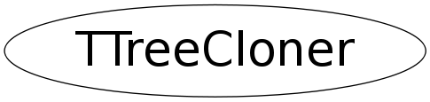

class TTreeCloner
TTreeCloner Class implementing or helping the various TTree cloning method
Function Members (Methods)
public:
| TTreeCloner(TTree* from, TTree* to, Option_t* method, UInt_t options = kNone) | |
| virtual | ~TTreeCloner() |
| static TClass* | Class() |
| void | CloseOutWriteBaskets() |
| void | CollectBaskets() |
| UInt_t | CollectBranches() |
| UInt_t | CollectBranches(TBranch* from, TBranch* to) |
| UInt_t | CollectBranches(TObjArray* from, TObjArray* to) |
| void | CopyMemoryBaskets() |
| void | CopyProcessIds() |
| void | CopyStreamerInfos() |
| Bool_t | Exec() |
| const char* | GetWarning() const |
| virtual TClass* | IsA() const |
| Bool_t | IsValid() |
| Bool_t | NeedConversion() |
| virtual void | ShowMembers(TMemberInspector& insp) |
| void | SortBaskets() |
| virtual void | Streamer(TBuffer& b) |
| void | StreamerNVirtual(TBuffer& b) |
| void | WriteBaskets() |
private:
| void | ImportClusterRanges() |
Data Members
public:
| enum ECloneMethod { | kDefault | |
| kSortBasketsByBranch | ||
| kSortBasketsByOffset | ||
| kSortBasketsByEntry | ||
| }; | ||
| enum EClonerOptions { | kNone | |
| kNoWarnings | ||
| kIgnoreMissingTopLevel | ||
| }; |
private:
| UInt_t* | fBasketBranchNum | [fMaxBaskets] Index of the branch(es) of the basket. |
| Long64_t* | fBasketEntry | [fMaxBaskets] list of basket start entries. |
| UInt_t* | fBasketIndex | [fMaxBaskets] ordered list of basket indices to be written. |
| UInt_t* | fBasketNum | [fMaxBaskets] index of the basket within the branch. |
| Long64_t* | fBasketSeek | [fMaxBaskets] list of basket position to be read. |
| UInt_t | fCloneMethod | Indicates which cloning method was selected. |
| TObjArray | fFromBranches | |
| TTree* | fFromTree | |
| Bool_t | fIsValid | |
| UInt_t | fMaxBaskets | |
| Option_t* | fMethod | |
| Bool_t | fNeedConversion | True if the fast merge is not possible but a slow merge might possible. |
| UInt_t | fOptions | |
| UShort_t | fPidOffset | Offset to be added to the copied key/basket. |
| TObjArray | fToBranches | |
| Long64_t | fToStartEntries | Number of entries in the target tree before any addition. |
| TTree* | fToTree | |
| TString | fWarningMsg | Text of the error message lead to an 'invalid' state |
Class Charts
{kind=link}
{kind=link}
{kind=link}
{kind=link}

Function documentation
void ImportClusterRanges()
virtual ~TTreeCloner()
void CloseOutWriteBaskets()
UInt_t CollectBranches(TBranch* from, TBranch* to)
UInt_t CollectBranches(TObjArray* from, TObjArray* to)
void CollectBaskets()
void CopyMemoryBaskets()
void CopyStreamerInfos()
void CopyProcessIds()
void SortBaskets()
void WriteBaskets()